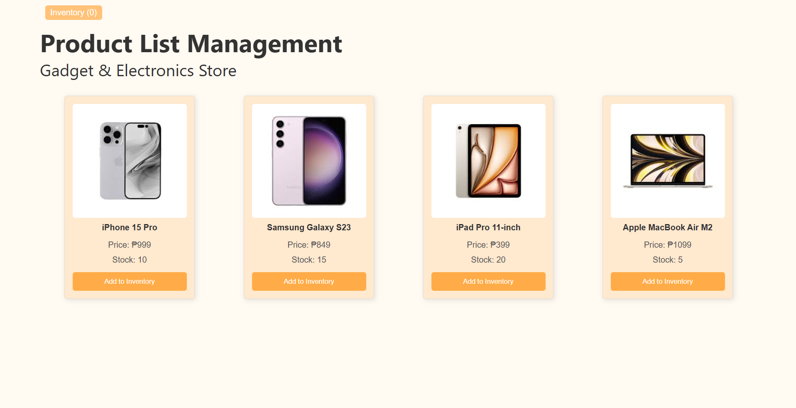
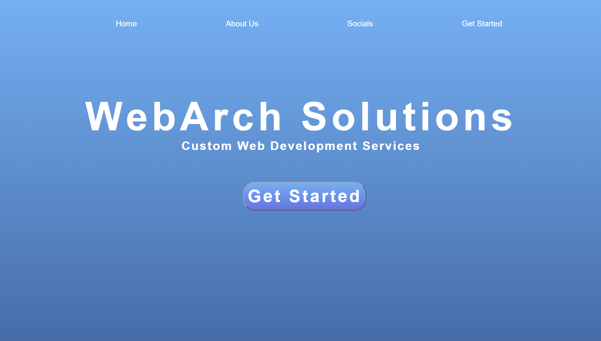

Product Management System is a client-side Point-of-Sale (POS) and inventory tracking web application built using vanilla JavaScript (ES6 Modules), HTML5, and CSS3. Developed in three days as a Senior High School final project, it demonstrates modular JavaScript architecture by separating authentication, product catalog management, cart/inventory logic, and UI notifications into distinct files.
Project Overview
• Purpose: Simulates an electronics and gadget store POS interface where users can log in, monitor live stock levels, manage a shopping cart/inventory, and process mock checkouts.
• Modular Architecture: Built with native JS modules—separating user login (user.js), product data (products.js), cart/stock calculations (cart.js), toast alerts (popup.js), and DOM event handling (main).
• Key Features:
• Authentication Flow: Includes a login screen that validates user credentials before redirecting to the main storefront.
• Real-Time Stock Tracking: Automatically deducts available item stock when added to the cart, restores stock when removed, and disables buttons with an "Out of Stock" state when quantity hits zero.
• Dynamic Cart & Checkout: Calculates running totals in Philippine Pesos (₱), supports inline quantity adjustments (➕/➖), triggers timed pop-up notifications, and resets the cart upon checkout.

WebArch Solutions is a modern, responsive landing page designed to showcase a custom web development agency. Built as a clean front-end showcase, the project highlights core business values and directs prospective clients toward starting a project.
Project Overview
• Purpose: Serves as a digital storefront for a web development service, positioning the brand as a one-stop solution for tailored business websites.
• Key Value Propositions: Highlights three core pillars—Quality (detail-oriented builds), Reliability (on-time delivery), and Support (end-to-end client guidance).
• User Flow & Structure: Features straightforward navigation (Home, About Us, Socials, Get Started), a prominent call-to-action hero section, a value-proposition grid, and social media integration in the footer.